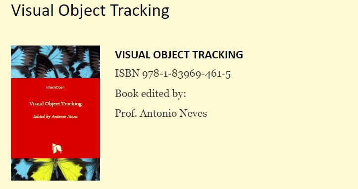

Md Maklachur Rahman
PhD Student in Computer Science and Engineering
 Scholar
ScholarI am a PhD student in Computer Science and Engineering at Texas A&M University. My research focuses on medical image segmentation, computer vision, vision-language modeling, and efficient deep learning. I develop robust and practical learning frameworks for real-world applications, with a strong interest in healthcare-oriented problems. My broader background includes visual tracking, multimodal learning, and deep neural network design.
News
- Mar 2026 Two papers are under review at MICCAI 2026, and one manuscript is under review at IJCV.
- Feb 2026 One first-authored paper, MambaLiteUNet: Cross-Gated Adaptive Feature Fusion for Robust Skin Lesion Segmentation, was accepted to CVPR 2026.
- 2025 One first-authored paper, AULUNet: An Adaptive Ultra-Lightweight UNet Framework for Efficient Skin Lesion Segmentation in Resource-Constrained Environments, was accepted to BMVC 2025 as an oral presentation.
- 2025 Selected as an Outstanding Reviewer for BMVC 2025.
- 2024 Received the AAAI Travel Award and the Texas A&M CS Department Travel Award.
Education
- PhD, Computer Science and Engineering, Texas A&M University, USA (Jan 2022 – Present)
- MS, Computer Science and Engineering, Kyungpook National University, South Korea (Sep 2018 – Aug 2020)
- BS, Computer Science and Engineering, Chittagong University of Engineering & Technology, Bangladesh
Experience
- Graduate Research Assistant, Texas A&M University (Jan 2022 – Present)
- Researcher / Research Assistant, Kyungpook National University (Aug 2018 – Dec 2021)
- Software Engineer, Samsung R&D Institute Bangladesh (Oct 2013 – Jul 2016)
Publications
CVPR 2026

BMVC 2025

AULUNet: An Adaptive Ultra-Lightweight UNet Framework for Efficient Skin Lesion Segmentation in Resource-Constrained Environments
British Machine Vision Conference (BMVC), 2025 Oral
First-authored paper focused on efficient medical image segmentation under strict parameter and compute budgets.
AAAI 2024

Target Focused Shallow Transformer Framework for Efficient Visual Tracking
AAAI 2024 Doctoral Consortium
Doctoral consortium paper on efficient transformer-based visual tracking.
[Venue]
AAAI 2024

Learning Random Noise Salient Feature Fusion Siamese Network for Low-Resolution Object Tracking
AAAI 2024 Student Abstract and Poster Program
Student abstract on robust low-resolution visual tracking.
[Venue]
Electronics 2020

IEEE Access 2020

IW-FCV 2020

IW-FCV 2021

Book Chapter

Siamese-based Attention Learning Networks for Robust Visual Object Tracking
In Visual Object Tracking, IntechOpen, 2021
Book chapter summarizing Siamese-based attention learning methods for visual tracking.
[Chapter]
Earlier Work

Digital Watermarking for Image Authentication Based on Combined DCT, DWT and SVD Transformation
International Journal of Computer Science Issues, 2013
Earlier undergraduate work on digital watermarking and image authentication. This is fine to keep lower on the page to show research breadth.
Advising & Mentoring
Undergraduate and junior research mentoring at Texas A&M University
I mentor students working on medical image segmentation, computer vision, and related deep learning topics.
Add current student list here
Format example: Student Name — topic / role / paper or project link.
Add paper outcomes here
Format example: Student Name — Paper Title [Paper] [Code].
Honors & Awards
- BMVC Outstanding Reviewer
- AAAI Travel Award
- Texas A&M CS Department Travel Award
- Outstanding MS Thesis Award, Kyungpook National University
- Best Student Paper Award, IW-FCV 2020
Academic Service
- Reviewer: AAAI, CVPR, BMVC, ECCV
- Reviewer: Pattern Recognition, Neurocomputing, Pattern Recognition Letters, Displays, and others